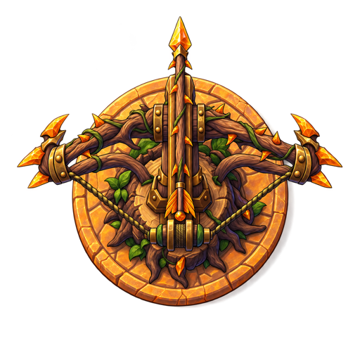
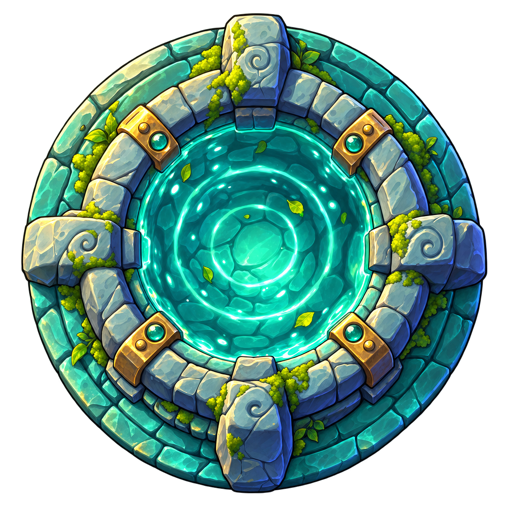
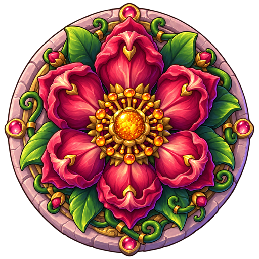
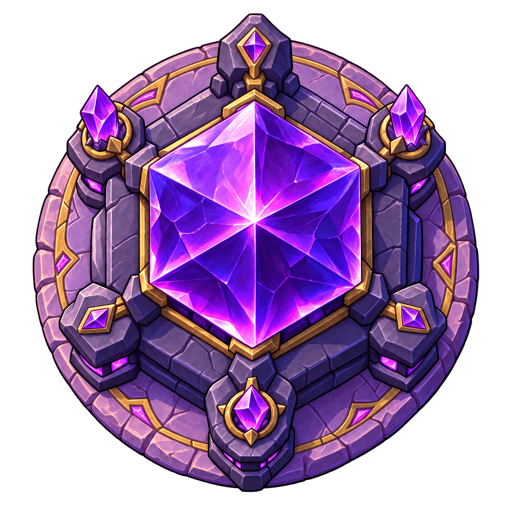
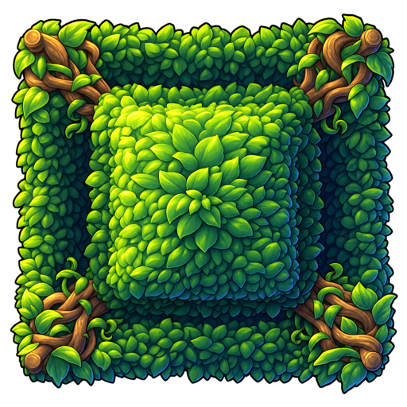
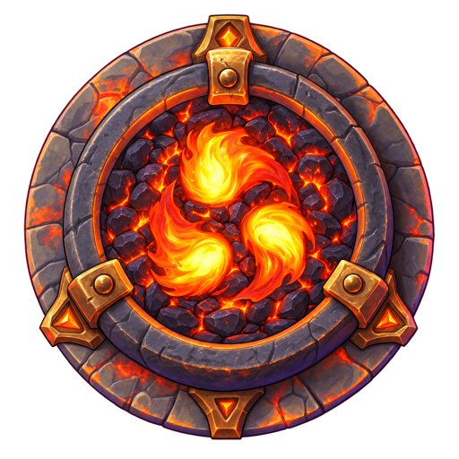
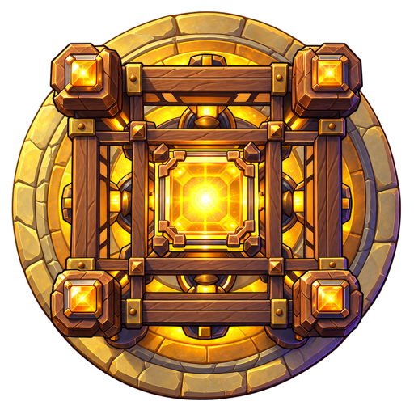

<body style="margin:0;background:repeating-conic-gradient(#777 0% 25%, #999 0% 50%) 0 0/32px 32px;"><div style="display:flex;flex-wrap:wrap;gap:8px;padding:10px"><div style="text-align:center;font:12px sans-serif;color:#fff"><br>thorn l2</div><div style="text-align:center;font:12px sans-serif;color:#fff"><br>sap l2</div><div style="text-align:center;font:12px sans-serif;color:#fff"><br>bloom l2</div><div style="text-align:center;font:12px sans-serif;color:#fff"><br>prism l2</div><div style="text-align:center;font:12px sans-serif;color:#fff"><br>hedge l2</div><div style="text-align:center;font:12px sans-serif;color:#fff"><br>ember l2</div><div style="text-align:center;font:12px sans-serif;color:#fff"><br>lantern l2</div></div></body>